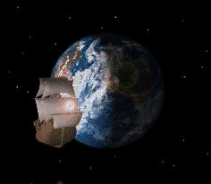
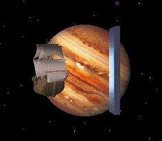
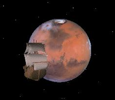
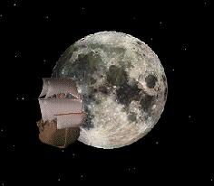
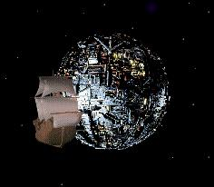
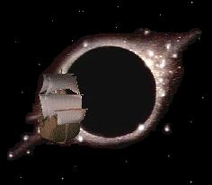
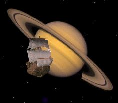
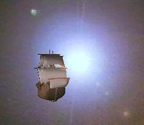
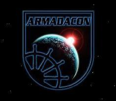

Logos over the Years
Almost all organisations use a logo of some sort and ArmadaCon is no different.
There was a period of time when the logo was changed for each convention. It was felt that it would freshen-up the look of each years convention website and would be a bit of fun.
Here's a list of those logos and some notes about each.
 |
Generic This was the first logo used and the one that's used most often. The logo represents the Golden Hind orbiting the Earth; giving it a sci-fi overtone. Since the convention is held in Plymouth, where the English ships sailed to fight the Spanish Armada (hence Armada-Con); using the Golden Hind is rather apt. |
 |
ArmadaCon 2001 Since the year was 2001, the design was influenced by the film 2001: A Space Odyssey. Out went the Discovery, and in came the Golden Hind. We had to keep the Monolith though; the logo wouldn't have been right without it! |
 |
ArmadaCon 14 The planet Mars has figured in science fiction many times over the years. Some of it was good, while other stuff was not so good! Either way, having the ship orbiting Mars was a fair idea. |
 |
ArmadaCon 15 For the first time, the convention started on Halloween. Using the moon was a nice nod to the ghost & ghoulies atmosphere of the time of year. |
 |
ArmadaCon 16 (Early) In a sideways swipe at a book which appears at the ArmadaCon Turkey Readings (a flying cube), a flying mechanical sphere was used. However, somebody saw it and thought it was a Borg Sphere. Fearing an attack by the Paramount lawyers, the logo had to be changed. The logo designer was unaware that there was a Borg Sphere that appeared in Star Trek : Voyager at the time; as they didn't watch it! |
 |
ArmadaCon 16 (Late) What do you get when you completely remove the 'round thing behind the ship'? Yup, there's nothing! In short, it's a black hole! |
 |
ArmadaCon 17 Saturn was chosen for this years 'round thing behind the ship'; for no other reason than because it was a nice picture! |
 |
ArmadaCon 18 For the final logo of the series (for a few years!) The 'round thing behind the ship' was dispensed with all together and an exploding star was used. |
 |
ArmadaCon 22 After a break of four years, the logo was given a complete overhaul. For the first time, the word 'Armadacon' formed part of the actual design. The long standing ship had now been replaced by a ships wheel to retain the nautical theme, but placed in a celestial alignment with the Earth and the Sun to continue the Sci-Fi theme. |